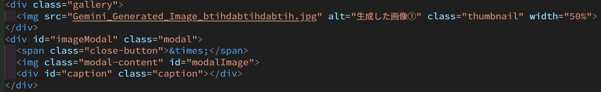
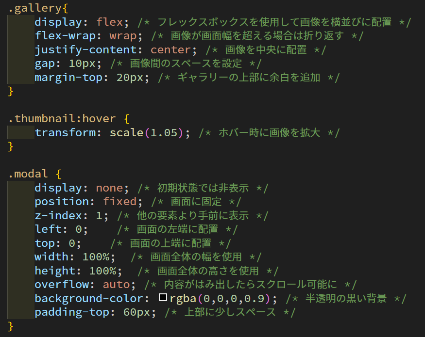
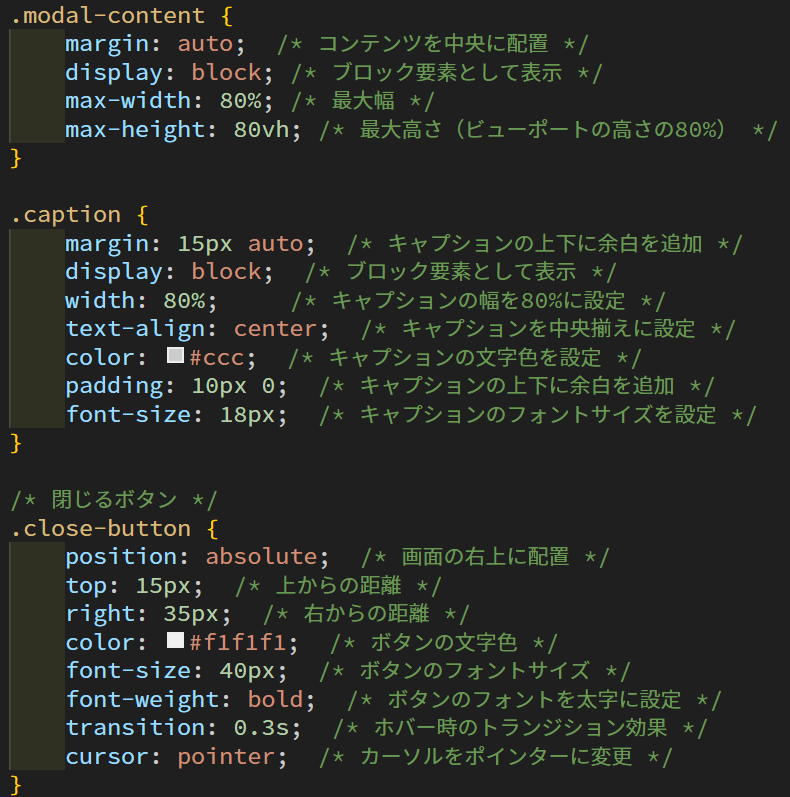
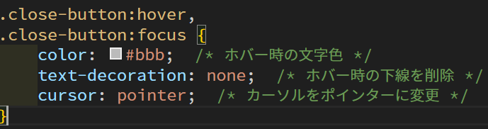
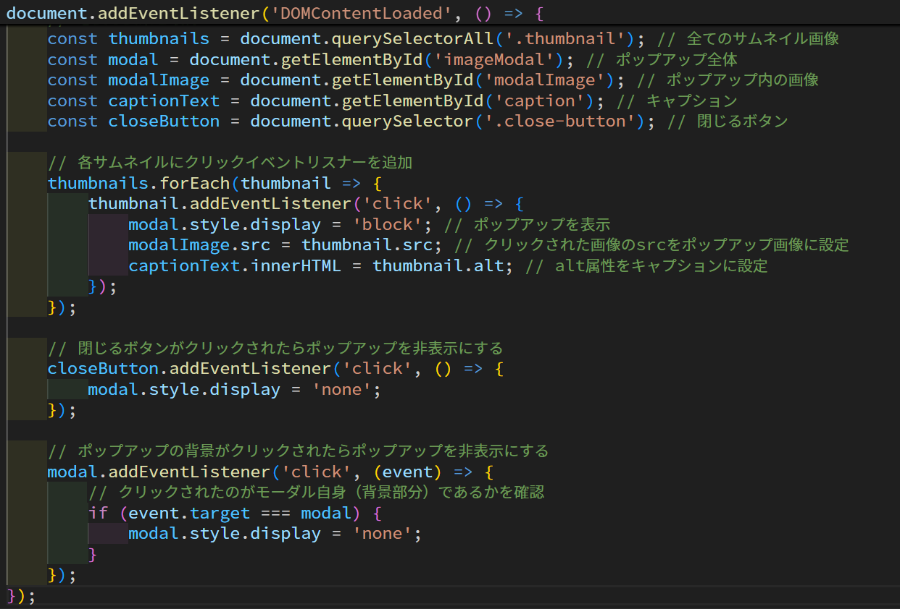

JavaScript解説(初心者向け)
このページでは、初心者に向けてJavaScriptでできることや、使い方などを紹介・解説します。
初めてJavaScriptを学んだり、使ったりする人の役に立てば幸いです。
目次
JavaScriptとは
JavaScriptとは、Webサイトやアプリケーションに動きをつけることができるプログラミング言語です。
特にブラウザ上で動作し、CSSとともに使用されることが多いです。
似た名前のプログラミング言語にJavaがありますが、JavaScriptとは別の言語です。
JavaScriptでできること
JavaScriptを使うことで、様々な表現ができるようになります。
例
- Webサイトの動きをつける
- ポップアップウィンドウを表示させる
- フォームの形式や内容の有無を確認する
- グラフの描画
- ブラウザ上での計算
- ブラウザの拡張機能の作成
- スマホアプリの作成
- Webアプリの作成
JavaScriptを使って画像を拡大表示する
JavaScriptを利用して、画像を拡大してポップアップで表示させてみましょう。今回はGoogle Geminiを利用して以下の画像を生成しました。
この画像をポップアップで表示させます。そのためにまずはhtmlファイルでポップアップの構造を定義します。
galleryというクラスを作成し、 クリックできるサムネイル画像としてthumbnailというクラスを配置します。 次に、imageModalというIDを持つボップアップ全体のコンテナを作成しておきます。 そして、ポップアップを閉じるためのclose-buttonというクラスを作成し、ポップアップ内に配置します。 最後にmodal-contentというIDを持つ画像を配置し、ポップアップ内に表示される画像を指定し、captionというIDを持つ要素を配置して、画像の説明となる文章を表示させます。 ここまでのhtmlのコードを以下に示します。

次に、CSSでポップアップのスタイルを定義します。
JavaScriptでblockに切り替えることで表示するために、.modalをdisplay: none; としておきます。また、画像がクリックされたときにポップアップを最前面に表示させるため、position: fixed;、z-index: 1;とします。 そして、background-colorをrgba(0, 0, 0, 0.9);とすることで、ポップアップの背景を半透明の黒にします。 ここまでのcssのコードを以下に示します。
  
最後に、JavaScriptでポップアップの表示・非表示を制御するためのコードを書きます。
まず、htmlが完全に読み込まれてからJavaScriptを実行するために、DOMContentLoadedというイベントを設定しておきます。 次に、サムネイル画像要素を取得するために、querySelectorAllを使用して.thumbnailクラスを持つすべての画像を取得します。 クリックされたときにポップアップのスタイルをdisplayからblockに切り替えるために、addEventListenerを使用して、クリックイベントを設定します。 ここでクリックされた画像のsrcとalt属性を取得し、ポップアップ内の画像と説明に設定します。 最後に、閉じるボタンやポップアップの背景がクリックされたときにdisplayスタイルをnoneに切り替えて、非表示にします。 ここまでのJavaScriptのコードを以下に示します。
これらのコードを実装することで、以下のようなポップアップ表示ができる画像をwebサイト上に作ることができます!
参考文献
- JavaScriptでできることとは？Webデザイナーになるために必要な勉強のコツをご紹介 | Webデザイン・Webデザイナー専攻 | デジタルハリウッドの専門スクール(学校)
- ページ内リンクでジャンプやスクロールさせるHTMLタグの作成方法 | WEB集客ラボbyGMO (GMO TECH)
本コンテンツの作成時間(HTML/CSS/JavaScriptの設計・実装を含む) : 約6時間